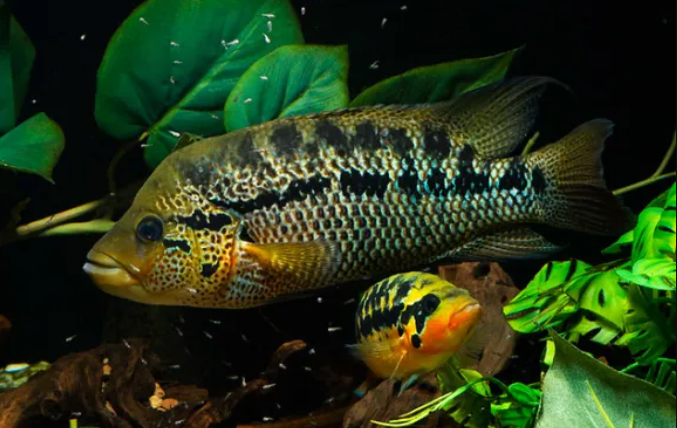
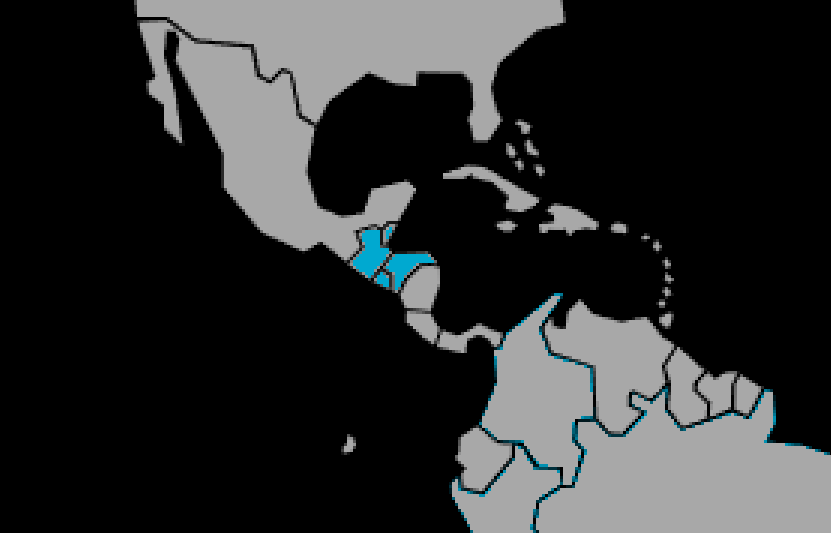

Systématique
- Ordre : Cichliformes
- Famille : Cichlidae
- Genre : Parachromis
- Espèce : P. motaguensis

Parachromis motaguensis est un grand cichlidé d'Amérique centrale, réputé pour sa coloration spectaculaire et son tempérament affirmé.
C'est un poisson musclé et comprimé latéralement, doté d'une mâchoire inférieure prognathe typique des prédateurs. Les mâles atteignent une taille maximale d'environ 30 cm en aquarium (parfois un peu moins dans la nature selon les localités). Il présente une coloration de fond jaune doré à orangé, parsemée de nombreuses taches noires et de points rouges vifs, ce qui lui vaut parfois le surnom de "tigre rouge" chez les aquariophiles.
Il est souvent considéré comme l'un des plus beaux représentants du genre Parachromis, mais aussi comme l'un des plus exigeants en matière de cohabitation.
C'est un prédateur piscivore qui chasse souvent à l'affût. Son comportement est territorial et très agressif, surtout en période de reproduction ou dans un volume inadapté.
Il creuse le sol et réorganise le décor. La maintenance en bac communautaire est déconseillée sauf dans des volumes immenses (plusieurs milliers de litres) avec d'autres espèces très robustes. La maintenance en couple spécifique est la méthode la plus sûre, bien que la formation du couple puisse être délicate, le mâle pouvant tuer la femelle si elle n'est pas prête à pondre.
Mode : ovipare (pondeur sur substrat découvert).
La reproduction est biparentale. La femelle dépose jusqu'à 2000 œufs ou plus sur une roche plate ou une racine nettoyée. Les œufs éclosent en 3 à 4 jours.
Les parents protègent les alevins avec une extrême férocité. Les alevins nagent librement après environ une semaine et grandissent rapidement s'ils sont bien nourris.
Dimorphisme sexuel : Les mâles sont plus grands et ont tendance à avoir des mouchetures plus fines sur le corps, avec des nageoires impaires plus effilées. Les femelles, plus petites, présentent souvent une coloration rouge/orangée plus intense et unie sur les opercules et les flancs lorsqu'elles sont en parure de reproduction.
Espérance de vie : 10 à 15 ans en captivité.
Il vit dans les rivières à courant modéré à fort, ainsi que dans certains lacs, du Guatemala au Salvador. Il préfère les zones encombrées de rochers et de bois mort où il peut se cacher pour surprendre ses proies.
Répartition

Origine naturelle :
- Amérique centrale.
- Versant Atlantique : bassin de la rivière Motagua (Guatemala et Honduras).
- Versant Pacifique : de la rivière Choluteca (Honduras) jusqu'au Salvador.
Paramètres de maintenance
Température : 24 à 28 °C.
pH : 7,0 à 8,0.
GH : 10 à 20 °dGH (eau dure).
Courant : Modéré, avec une excellente oxygénation. C'est un poisson sensible à la qualité de l'eau (nitrates) malgré sa robustesse apparente.
Volume conseillé : Minimum 600 L pour un couple adulte établi. Pour une maintenance en groupe ou communautaire, des volumes de 1000 à 1500 L sont nécessaires.
Régime alimentaire
Régime : carnivore / piscivore.
Dans la nature, il se nourrit principalement de poissons et de gros invertébrés.
En aquarium, il nécessite une nourriture substantielle : gros granulés, crevettes entières, moules, éperlans, vers de terre.